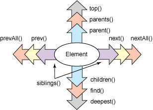
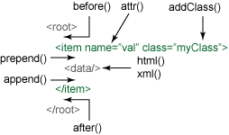

[原创翻译]QueryPath PHP的Jquery实现,QueryPath教程
Tags: QueryPath 教程 php jquery dom 抓取
Toc:no
Status: public
Position: 1
QueryPath PHP的Jquery实现
HTML,HTTP和XML,是WEB技术领域无可争议的三大基础支柱技术.然而对于PHP开发者来说,在使用这三种技术的时候可能会比较麻烦.新出现的QueryPath库,是一个使用PHP实现的如同Jquery的类库,提供了方便强大的处理XML,HTTP,HTML的类库.无论是WEB网页,WEB service,SVG或者SPAARQL,RDF,Atom,QueryPath都能处理,并且用PHP语言提供了健壮并简单易用的API.在本文中,介绍了如何构建QueryPath对象,如何遍历并处理XML和HTML.
QueryPath
从使用简单方面,QueryPath的语法很简洁,方法的名字都很短并且语义化,很容易知道是做什么的(比如text(),append(),remove()).因为很多方法返回的都是QueryPath对象,方法的调用是支持链式调用的.这种用法有时候也叫做流式接口.为了符合Javascript开发者的习惯,QueryPath实现了Jquery主要的遍历方法和操作方法.
从健壮性来说,QueryPath提供了载入,读取,搜索,写入XML与HTML的工具.尽管不考虑类库的大小,通用的接口还是很难满足所有的需求,QueryPath提供了扩展开发接口,可以给QueryPath添加新的方法.同时其扩展也包含了数据库支持,模板支持,以及额外的XML支持.
或许你也会说,为啥还需要一个XML或HTML的轮子?PHPv5已经提供了很实用的XML工具,也有DOM实现和SimpleXML类库了.答案很简单:QueryPath被设计作为一个通用的工具.DOM API复杂并且笨重.虽然它的对象模型可能很强大,但是即便实现最简单的功能都需要写很多行代码.SimpleXML,对于许多需求来说又太过简陋了.除非XML是完全确定的,使用SimpleXML来操作文档才比较简单.
QueryPath正是力求在DOM的功能性与SimpleXML的简单之间找到一个平衡点.
需求:
QueryPath是纯PHP的类库,所以可以直接从官方网站下载后使用
QueryPath的系统要求很少,只要PHPv5版本并且开启DOM扩展就可以.大部分的PHPv5发行版都符合开箱即用的需求.QueryPath不支持遗弃多年的PHPv4.
链式调用:
QueryPaht有四个基本的概念:
* 一个QueryPath对象总是会与一个XML或HTML文档关联
* QueryPath可以查询文档,并生成一个匹配的结果集
* QueryPath可以操作文档,可以对文档进行新增,修改,删除操作.
* QueryPath的方法支持链式调用,所以一行语句可以执行多个方法.只需几行代码就可以对文档进行载入和增删改查等操作
上代码,包含如上的特点:
<?php
require 'QueryPath/QueryPath.php';
qp('sample.html')->find('title')->text('Hello World')->writeHTML();
?>
例子中只包含了一个文件,QueryPath/QueryPath.php ,这就是使用QueryPath需要包含的唯一的文件,除非还用到了QueryPath的其他扩展.
下面一行代码就是QueryPath的链式调用,其做了如下事情:
* 新建一个QueryPath对象,并指向sample.html文档.当qp()方法执行的时候,就会创建一个新的QueryPath对象,用于之后对其进行载入和解析.
* 通过find()方法对文档进行搜索,使用CSS3选择器寻找所有<title></title>元素
* title的text值设置为了Hello World,当执行到此,title的子节点都会被替换成CDATA字符串Hello World.所有的内容都会被销毁.
* 所有文档都会通过writeHTML()方法写入到标准输出.
上面的例子还可以简化,qp()方法支持把CSS选择器作为可选的第二个参数传入.下面是简化后的版本:
<?php
require 'QueryPath/QueryPath.php';
qp('sample.html', 'title')->text('Hello World')->writeHTML();
?>
假设sample.html是空白的HTML文档,上面的例子输出会跟下面的内容差不多:
<!DOCTYPE html PUBLIC "-//W3C//DTD HTML 4.01//EN" "http://www.w3.org/TR/html4/strict.dtd">
<html lang="en">
<head>
<title>Hello World</title>
</head>
<body>
</body>
</html>
这些简单的例子展示了QueryPath可以实现的功能.下面介绍一些其他的方法:
qp()工厂方法:
在QueryPath中最常用的基础方法就是qp()方法.这个方法会生成一个新的QueryPath对象,就像传统的constructor构造方法做的事情一样.
如果你对面向对象的开发模式比较熟悉,你可能会发现qp()方法实现了工厂模式.QueryPath采用了一个方法,而不是通过定义工厂类的构造方法来实现工厂模式.这样干能节省一些代码量,更重要的是这种实现使得QueryPath更接近jQuery,如果你对jQuery比较熟悉,学习难度曲线会降低一些吧.
一个QueryPath对象必须与一个XML或者HTML文档关联,一旦对象创建好,他们就会绑定在一起.qp()方法支持三个参数,都是可选的:
#文档# 可以是文件名,URL,XML或者HTML字符串,DOM文档或者DOM元素,SimpleXML元素,或者一个DOM元素数组.如果不是这些支持的类型,则会创建一个空的XML文档.
#CSS3选择器# 如果传了这个参数,载入文档的时候QueryPath会同时使用这个选择器查询文档
#选项数组# 可以针对这个QueryPath实例,传一组配置参数进行配置.API文档有此处支持的参数的详细说明
qp()方法的第一个参数支持数量众多的类型的文档,从而可以很简单的创建一个QueryPath对象.QueryPath可以通过文件名或URL来载入文档.如果传的是XML/HTML字符串,也可以直接解析内容.同时,也支持DOM和SimpleXML这两种常见的XML文档.下面的例子展示了直接传XML字符串的用法:
<?php
require 'QueryPath/QueryPath.php';
$xml = '<?xml version="1.0"?><doc><item/></doc>';
$qp = qp($xml);
?>
执行上面的代码,$qp会指向一个经过解析XML的QueryPath对象.如果PHP的配置中允许HTTP/HTTPS流式封装,(大部分PHPv5发行版都支持),则也可以通过HTTP URL来载入内容.
<?php
require 'QueryPath/QueryPath.php';
$qp = qp('http://example.com/file.xml');
?>
因此,QueryPath也可以用来解析Web Services.创建新文档的时候,有一种方便的载入HTML样板的方式:
<?php
require 'QueryPath/QueryPath.php';
$qp = qp(QueryPath::HTML_STUB);
?>
QueryPath::HTML_STUB包含了一个最基本的HTML样板,内容如下:
<?xml version="1.0"?>
<!DOCTYPE html PUBLIC "-//W3C//DTD XHTML 1.0 Strict//EN"
"http://www.w3.org/TR/xhtml1/DTD/xhtml1-strict.dtd">
<html xmlns="http://www.w3.org/1999/xhtml">
<head>
<meta http-equiv="Content-Type" content="text/html; charset=utf-8"/>
<title>Untitled</title>
</head>
<body></body>
</html>
通过样板文件,可以更快捷的创建一个新的HTML文档.
遍历文档
打开一个文档之后,会需要对文档进行遍历来找到需要的内容.QueryPath在这方面的设计非常易用.为了满足大部分遍历的需求,QueryPath提供了多种方法,大部分都支持使用CSS3选择器来找到对应的节点.

上图总结了最常用的遍历方法.下面有具体对应的描述.除此之外还有别的方法,这些介绍的是最常用的方法.
find()
在当前的节点内选择符合selector的元素(支持CSS选择器)xpath()
选择符合Xpath表达式的节点(不支持CSS选择器)top()
选择文档的根节点元素(不支持CSS选择器)parents()
选择任意多个父节点(支持CSS选择器)parent()
选择一个父节点(支持CSS选择器)siblings()
选择所有兄弟节点,前后都包括(支持CSS选择器)next()
选择下一个兄弟节点(支持CSS选择器)nextAll()
选择当前节点之后的所有兄弟节点(支持CSS选择器)prev()
选择上一个兄弟节点(支持CSS选择器)prevAll()
选择所有前面的兄弟节点(支持CSS选择器)children()
选择该节点的子节点(支持CSS选择器)deepest()
选择该节点最深的子节点或该节点下的所有子节点(不支持CSS选择器)
QueryPath的许多方法都可以精确的查询到指定的元素,上面列出来的大部分方法都支持CSS3选择器参数.只有top()和deepest()方法是不带参数的查询方法.
来看一个简单的关于遍历的例子.假设有如下的XML文档:
<?xml version="1.0"?>
<root>
<child id="one"/>
<child id="two"/>
<child id="three"/>
<ignore/>
</root>
<?php
require 'QueryPath/QueryPath.php';
$xml = '<?xml version="1.0"?>
<root>
<child id="one"/>
<child id="two"/>
<child id="three"/>
<ignore/>
</root>';
$qp = qp($xml, 'root')->children();
print $qp->size();
?>
children()方法会选择
如果只想选定前三个
<?php
require 'QueryPath/QueryPath.php';
$xml = '<?xml version="1.0"?>
<root>
<child id="one"/>
<child id="two"/>
<child id="three"/>
<ignore/>
</root>';
$qp = qp($xml, 'root')->children('child');
print $qp->size();
?>
最后一行打印了符合条件的全部元素,共有3个.在QueryPath内部会保存这三个元素作为当前的上下文数据.如果想做进一步的查询,则会从这三个元素开始,如果插入数据 也会插入到这三个元素内.
CSS选择器
CSS选择器是CSS表达式的一部分,用来确定样式会作用在哪些元素上.CSS选择器也可以在文档外部作为样式表的一部分来使用.QueryPath使用选择器作为查询的描述语言,并且支持在CSS3选择器标准中定义的特性和方法.
CSS选择器在QueryPath中相当重要,上面介绍了十个支持CSS选择器作为参数的方法,虽然到目前我们用过的还只是简单的tag名字查询的方法,然而CSS3选择器远比这些列举的简单例子要强大的多.更详细的描述本文不做过多介绍,只列举一些常用的例子如下
选择器:p
描述 :找到所有标签为<p/>的元素
匹配 : <p/>
选择器:.container
描述 :找到所有class属性为container 的元素
匹配 :<div class="container">
选择器:#menu
描述 :找到所有id属性为menu的元素.
匹配 :<div id="menu">
选择器:[type="inline"]
描述 :所有type属性为inline的元素
匹配 :<code type="inline"/>
选择器:tr > th
描述 :选择所有父元素为tr的th元素
匹配 :<tr><th/></tr>
选择器:table td
描述 :选择祖先(如父元素或祖父元素)为table的所有td元素
匹配 :<table><tr><td/></tr></table>
选择器: li:first
描述 : 选择第一个<li>元素.除了:first 还支持:last :even :odd
匹配 : <li/>
这些常见的选择器可以组合起来使用,从而组成复杂的查询.比如
div.content ul>li:first
这个语句会选择全部class为content的div,在div内部搜索全部的<ul/>,返回每个<ul/>内部的第一个<li/>元素.
在返回结果中遍历
上面已经介绍了两种遍历文档的方法,QueryPath内置方法和CSS3选择器.下面介绍一下如何遍历查询结果.
一个QueryPath对象是可以遍历的,在PHP里面来讲,是可以作为迭代器遍历的.传统的PHP循环结构就可以对QueryPath的匹配结果对象进行遍历.
如果想要独立的处理每个元素,也很容易.下面的例子,展示了QueryPath作为迭代器的用法.
<?php
require 'QueryPath/QueryPath.php';
$xml = '<?xml version="1.0"?>
<root>
<child id="one"/>
<child id="two"/>
<child id="three"/>
<ignore/>
</root>';
$qp = qp($xml, 'root')->children('child');
foreach ($qp as $child) {
print $child->attr('id') . PHP_EOL;
}
?>
foreach循环的每个结果会赋值给\(child变量,但\)child变量不只是一个元素,它是一个指向当前元素的QueryPath对象,所以可以对其使用QueryPath提供的那些方法.
为了与Jquery的Api保持一致,QueryPath也提供了一些读取和修改的方法.单个的方法,可以根据传递参数的不同,既能获取数据也可以修改数据.比如 attr()方法,qp()->attr("name")会获取name属性的值,qp()->attr("name","value")则会把name属性的值设置为value.其他一些方法,诸如text(),html(),xml(),都可以这样既能读取又能修改属性的值.
由于所有的循环结果都包装在QUeryPath对象里,所以这些$child都可以调用QueryPath的方法,比如上面的attr(),来读取或者修改元素属性.
上面介绍了使用QueryPath方法,CSS3选择器,迭代器来遍历文档,下面介绍一下如何用QueryPath修改文档.
修改文档
遍历文档之后,接下来就可以对文档进行增删改查的操作了.再来看一下上面的例子.
<?php
require 'QueryPath/QueryPath.php';
qp('sample.html')->find('title')->text('Hello World')->writeHTML();
?>
在这个例子中,使用了text()方法来修改了<\title>元素的内容.QueryPath提供了一堆这样的方法来修改文档. 下图展示了这些方法作用的地方,这些方法都可以用来新增或是修改数据.绿色的标签表示当前选中的元素:

这些方法都是用来处理字符串的,通常用在HTML或者XML文档中,用来往文档中插入数据.插入后的数据立刻就可以访问和操作.
实际上,有两种类型的方法,其中一种可以操作XML片段,如下:
append(): 在当前选中的元素中插入数据作为最后一个子元素
prepend(): 在当前选中的元素中插入一个元素并作为第一个子元素
after(): 在当前选中的元素后插入新的元素
before(): 在当前选中的元素前插入新的元素
html(): 用一段HTML代码替换当前元素的子元素
xml(): 用一段XML代码替换当前元素的子元素
上面列举的方法,参数都需要传格式化好的XML或者HTML数据.下面展示一个html()方法的例子:
<?php
require 'QueryPath/QueryPath.php';
qp($file)->find('div.content')->html('<ul><li>One</li></ul>');
?>
上面图片列举的操作方法没有包括remove()方法,这玩意实在是没法画出来.这个方法是从文档中删除元素用的,如果调用的时候不传参数,则会把当前选中的元素干掉.但是,就像其他QueryPath的方法一样,remove()也可以传CSS3选择器参数,然后把所有符合条件的元素删掉.
另一类方法,是用来操作元素属性的,只有两个:
attr(): 获取/设置所有选中元素的属性
addClass(): 为当前选中的所有元素添加一个类
也有其他一些跟属性相关的方法,比如removeClass(),可以传一个类名,然后会把元素中相关的类删掉.removeAttr()方法,可以传一个属性名作为参数,然后把当前所有选中元素的属性删掉.
如此这般,把这些基本的工具组合在一起,就能实现强大的功能了.下面的例子是基于Twitter的,就不翻译啦.
原文地址:http://www.ibm.com/developerworks/library/os-php-querypath/